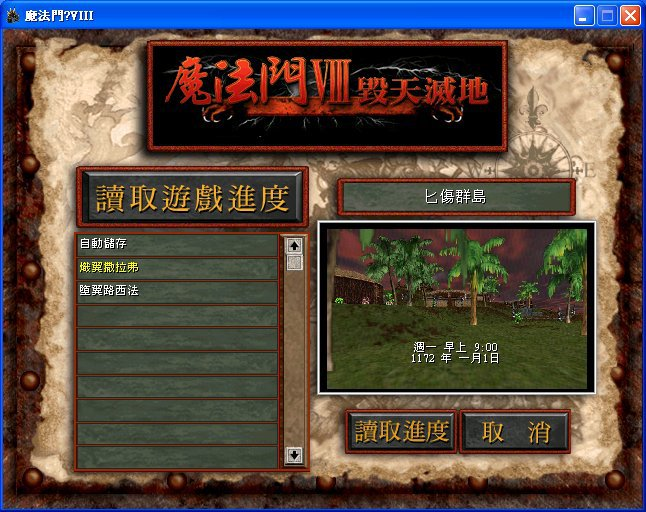
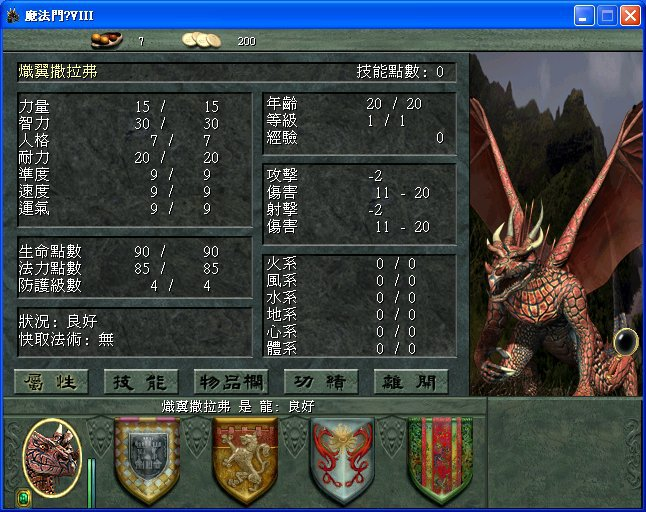
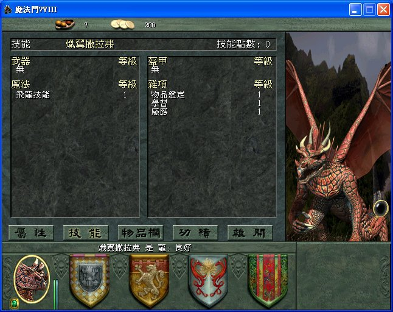
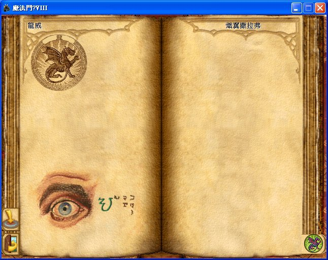

魔法門Ⅷ毀天滅地
因為迷上魔法門系列，所以中文版一推出，我就和同學放學一起去店裡，各自買一套回家。
一玩就發現大事不妙，這家公司完了！路人居然都講同樣的話，和路人對話變成沒意義的事。六代在城鎮走動的路人每次都不同，且角色有外交技能，可以和他們打交道，因此和路人講話，看是要找某某職人加入，還是探聽安羅斯的情報，是蠻有意義的事。怎會到了八代不但沒這設計，反而所有路人講的都是同一句話？這家公司發生什麼事了？沒資金快倒了得趕快做個遊戲來賣嗎？迷宮規模很小，不用花什麼心力就清理完畢，完成任務後也沒什麼印象剛剛做了什麼，跟六代千辛萬苦才完成任務，甚至會身心俱疲不一樣。劇情也不像六代和七代壯闊，而像資料片一樣簡單，擺明就是一款草率做出來賣錢的遊戲，不免為 New World Computing 名聲將因此一落千丈而擔憂，怕以後不會有魔法門了。
其實身為魔法門迷，八代的系統我很喜歡，視野範圍變寬，隊伍由主角組成，隊友可替換，我很愛八代的設計。我不像其他魔法門迷覺得系統要革新，我覺得這就是魔法門的特色，希望能一直保留下來。我覺得八代的失敗不在系統沒進步，我就是喜歡過去那樣的系統、那樣的玩法，所以高高興興買了一套回來，想再體驗一次魔法門帶給我的樂趣。純粹是草率做出八代這樣的遊戲，壞了公司名聲，導致口碑變差，大家不買單。
如果路人能讓玩家探聽情報、迷宮大個三倍、任務多個一半、劇情曲折一點…雖然魔法門八不可能超越六代再創高峰，但至少不至於砸了魔法門這塊招牌：「八代感覺就是騙錢的資料片，而不是遊戲。」不然八代其實玩起來比七代好玩，就是內容短，很快就沒了。
創角職業選龍的存檔下載
2012 年，又重玩《魔法門Ⅷ毀天滅地》國際中文版了！
創造人物時，我用 FPE2001 修改出職業為龍的角色，然後再將檔案儲存起來。如果你也想重玩，希望一開始就扮演龍的角色，那就可以下載我準備好的存檔，看喜歡紅色還是綠色自行選擇載點……
紅龍：20000307A_01.7z
青龍：20000307A_02.7z
使用方法
下載後，解壓，然後將檔案放到遊戲所在資料夾的「Saves」裡面。
如果你不知道遊戲安裝到哪裡，預設的路徑是「C:\Program Files\3DO\mm8」，不妨找看看。
然後執行遊戲，讀取進度就可以看到新手存檔了！

其他介紹
因為不知道該取什麼名字比較像龍，所以格式參考遊戲中最強之龍的名字「永恆土洛斯」，將紅龍取為「熾翼撒拉弗」，青龍取為「墮翼路西法」，也就是「熾天使撒拉弗」和「墮天使路西法」的意思。請自行用遊戲修改軟體更改成你喜歡的名字。
屬性則是這樣配的，請自行用遊戲修改軟體調整為你理想的初始屬性：

初始技能選擇將來能夠宗師級的三項：

初始技能：

這下賈達密大陸就算自願毀天滅地都很難，趕緊出發展開這場穩贏的旅程吧～！
可招募隊員一覽表
選了龍當主角，下一步就開始想規劃出最理想的陣容隊形！
5 級隊員
戴維林．阿肯那斯 死靈法師 匕傷群島冒險者旅店 遊戲一開始即可招募
艾爾斯貝斯．拉曼提亞 吸血鬼 匕傷群島冒險者旅店 遊戲一開始即可招募
費德瑞克．塔力米爾 牧師 匕傷群島血滴鎮 交付傳送水晶後可招募
賽蒙．譚普勒 騎士 匕傷群島廢棄神殿 進入廢棄神殿後可招募
羅哈尼．歐斯克理頓 黑暗精靈 阿爾瓦城 遊戲一開始即可招募
艾瑞斯 牛頭人 渡鴉海濱 遊戲一開始即可招募
伊斯希爾歌爾 龍 絞刑峽谷龍穴 遊戲一開始即可招募
15 級隊員
納山尼爾．羅伯茲 死靈法師 影旋山脈 遊戲一開始即可招募
蓋斯瑞克．摩枯妥拉 吸血鬼 影旋山脈 遊戲一開始即可招募
歐瓦都．彈指 食人妖 鐵鏽村 完成安置骨灰任務[1]
卡藍雅．麥莫瑞亞 死靈法師 渡鴉海濱城 完成尋找火湖證人任務
麥蘭德 牧師 渡鴉海濱城 完成尋找火湖證人任務
戴森．李藍 牧師 影旋死靈法師公會 完成尋找火湖證人任務
傑斯波．賽爾鵬 黑暗精靈 阿爾瓦城 完成尋找火湖證人任務
佛藍林 龍 鐵砂荒漠愛欣格洞穴 完成尋找火湖證人任務
蓮恩．暴風槍 騎士 絞刑峽谷 完成尋找暴風槍任務[2]
坦尼斯 牛頭人 霸殺煞之穴 完成霸殺煞之穴排水任務
瓦洛格．沙風 百戰食人妖 鐵砂荒漠 完成食人妖遷村任務[3]
30 級隊員
艾瑞克．史塔拉爾 暗精尊者 阿爾瓦城 完成種族同盟任務
賽斯瑞克．希索朋 百戰食人妖 鐵砂荒漠 完成種族同盟任務
因佛史塔斯 血族聖皇 影旋山脈 完成種族同盟任務
瑞歐耐爾 牛人王 霸殺煞之穴 完成種族同盟任務
海瓦提亞．代佛貝羅 巫妖 影旋山脈 完成種族同盟且與死靈結盟
瓦瑞西 太陽祭司 低語之森 完成種族同盟且與牧師結盟
耐力克斯．巫瑞爾 英豪 絞刑峽谷 完成種族同盟且與騎士結盟
布林史東 巨龍 影旋山脈雅達克洞穴 完成種族同盟且與龍族結盟
50 級隊員
考瑞．黑王座 暗精尊者 渡鴉海濱 完成拯救黑王座任務[4]
布拉森．暴風槍 英豪 渡鴉海濱 完成醫治暴風槍任務[5]
塔爾希爾 巫妖 影旋山脈 擊沉雷格那海盜艦隊
坦帕斯 英豪 絞刑峽谷 擊沉雷格那海盜艦隊
索恩．石下 百戰食人妖 渡鴉海濱 擊沉雷格那海盜艦隊
阿圖瑞斯．維瑞塔斯 血族聖皇 影旋山脈 擊沉雷格那海盜艦隊
烏布理契 牛人王 霸殺煞之穴 擊沉雷格那海盜艦隊
永恆土洛斯 巨龍 雷格那老羅伯洞穴 擊沉雷格那海盜艦隊
戴維許．契夫龍 太陽祭司 渡鴉海濱 擊沉海盜艦隊並救回暴風槍
屬性強化配方任務
有了好的隊員，接下來要讓主角成為當中最強的英雄！
遊戲有某一系列任務，蒐集簡單的材料給他，就會送你一瓶黑色藥劑，增加各式屬性 50 點。由於主角的屬性最低也有 9，全部解完屬性幾乎都 60 起跳，比那群 50 級英雄夥伴還要猛。
地點 住宅 藥劑 紅 藍 黃
－－ －－ －－ － － －
匕傷群島 希斯妥 速度 ４ ２ １
阿爾瓦 瑞漢西 運氣 ２ ３ ３
鐵砂荒漠 塔力安 耐力 ２ ４ １
絞刑峽谷 ………… 力量 … … …
影旋山脈 班耐費斯 智力 １ ２ ４
低語之森 東克 人格 １ ４ ２
荒煙迴廊 加文那斯 準度 ２ １ ４
絞刑峽谷的部分，開發者忘了設計進去，可見八代被批評說資料片不是沒道理的，草草完工的遊戲。但魔法門八其實很好玩，只是可以玩的東西過少，玩起來不過癮。
住宅所打的中文只是譯音，很可能和遊戲實際的中文不一樣，因此請當諧音做比對。
《魔法門 VIII 毀天滅地》攻略到此告一段落，這攻略主要目的，在於一早就確定自己應該發展的方向，不然玩到後面才覺得自己練錯就不好玩了。
剩下的主線任務、支線任務、升職任務……屬於故事性的部分，應該邊玩遊戲邊探索，比較能感受到 RPG 的樂趣。
會想到重玩這款遊戲，是因為魔法門八很有馬雅預言的風格，所以進入 2012 年，就拿出來重玩一次了。所以大家放心好了，我會阻止這場末日浩劫的！當然，也歡迎各位一起挺身而出，阻止這場浩劫！
我的新手攻略流程
有了前三篇《魔法門 VIII 毀天滅地》的資料，這裡分享我的新手攻略流程。
奠定主角基礎
一開始的目標，是與匕傷群島結識的夥伴解完任務，讓主角的飛龍技能達到 7，並學會「學習」技能。
死靈法師與騎士不需要栽培，因此不用花錢提升他們等級。死靈法師純粹是為了施放「巫眼術」和「照明術」幫助隊伍作戰，但脫離匕傷群島會邀請考瑞．黑王座，屆時有旅人寶袋可用，因此死靈法師很快就沒有作用。騎士同樣很快就會被布拉森．暴風槍取代。
牧師和吸血鬼值得栽培，所以花錢讓他們學習技能，尤其是弓箭。但魔法技能的話，著重體系即可，這兩個職業主要是補血用。
攻略流程要點如下：
１．讓主角喝光水桶增加屬性，並利用水井將幸運提升至 17。
２．造訪居民探聽技能導師的情報，同時接任務。
３．招募隊員，找島上南方的海盜練功賺錢。
４．學習技能，金幣低於 90 可以到水井撈到 1000 元，有兩次機會。
５．一邊解任務，一邊將主角等級訓練至 5。
出島後，在渡鴉海濱的馬廄搭車前往絞刑峽谷，然後前往龍穴將主角的飛龍技能提升至大師級。如此，主角奠定蓋世神功的基礎了！
提醒兩件事：在渡鴉海濱記得喝噴泉，往後才可用城鎮傳送來此地。在絞刑峽谷記得找蓮恩．暴風槍接尋找她父親的任務，因為絞刑峽谷不在城鎮傳送的選項中，避免浪費好幾天的來回時間。
考瑞．黑王座
往渡鴉海濱北邊走，前往阿爾瓦，接取尋找考瑞．黑王座的任務。
最好買一本「城鎮傳送」的魔法書，並記得喝阿爾瓦泉水，以便日後可用魔法傳送到阿爾瓦。
往阿爾瓦西邊走前往低語之森，利用主角的「飛翔」，從空中突破光元素的攻擊網，找丹堤里安的居所領取解除石化的捲軸。
接著飛往低語之森東北方解救石化的考瑞．黑王座。
遣散死靈法師，到渡鴉海濱旅店招募考瑞．黑王座，然後讓她學習城鎮傳送。
渡鴉海濱北方有棵楊柳樹，點擊的話會開啟隱藏寶箱，裡面有把競賽之弓（遺物），適合讓考瑞．黑王座裝備。
提醒一件事：在低語之森時，記得找導師讓主角的「學習」提升為專家再離開，因為低語之森不在城鎮傳送的選項中，避免浪費好幾天的來回時間。
布拉森．暴風槍
賺錢在阿爾瓦買「隱形術」的魔法書，讓考瑞．黑王座學習。
往渡鴉海濱東方走，前往影旋山脈（同樣記得喝噴泉），然後飛往北方偏西的瘋狂死靈法師實驗室。
先施放隱形術，再進實驗室，免得跟這群怪物交手。直直走，搭上自動升降梯，點門和布拉森．暴風槍對話。
回渡鴉海濱找戴維許領取解除詛咒的寶石，就可以救出瘋狂死靈法師實驗室的布拉森．暴風槍，在旅店招募他，取代隊伍原本的騎士。
由於目的只是招募這 50 級的英豪，能力不夠的話不需要急著奪回艾邦斯特屠龍槍。
開始冒險吧！
就這樣，我的隊伍有飛龍職業的主角、50 級的暗精尊者、50 級的英豪、一名牧師、一名吸血鬼，開始踏上冒險的旅程，準備好好享受魔法門八的劇情任務……
補充
金錢方面，可用黑王座的城鎮傳送，飛往影旋山脈購買海之銀塵，再飛往渡鴉海濱賣掉，最高一趟可以賺三萬左右。法力用完可以喝影旋山脈的噴泉水補回。
結語
在遊戲的冒險過程，我希望遊戲後期達成的陣容是：
主角（巨龍）
考瑞．黑王座（暗精尊者）
索恩．石下（百戰食人妖）
阿圖瑞斯．維瑞塔斯（血族聖皇）
戴維許．契夫龍（太陽祭司）
雖然不是強悍的陣容，但卻是很有趣的陣容，主要靠搭配這群特殊族群的獨到技能來求享受冒險的生活，而不是訴求戰鬥的隊伍。
打起來很忙就是了（不時需要相互支援），但就是那種忙，特別有冒險犯難的感覺。
但其實布拉森．暴風槍和戴維許．契夫龍是朋友，取代索恩．石下也不錯，重點是宗師級修復物品、以及專家弓箭。
主角（巨龍）
考瑞．黑王座（暗精尊者）
布拉森．暴風槍（英豪）
戴維許．契夫龍（太陽祭司）
阿圖瑞斯．維瑞塔斯（血族聖皇）
索恩．石下的優勢在於血厚，是布拉森．暴風槍的兩倍，所以更能適應敵方的魔法攻擊。加上皮甲宗師能提升魔法抗性，使這點更有保障。如果以稱職的肉盾為考量，加上以同盟的職業為訴求，我還是傾向索恩．石下。